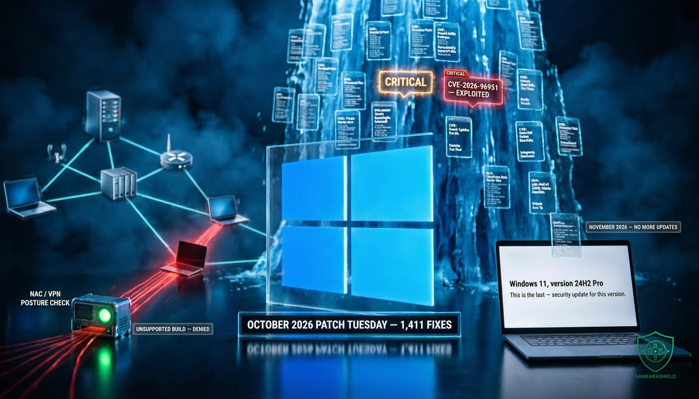

1,411 patches landed yesterday. For Windows 11 24H2 Pro laptops, it was the last one they will ever get.

On Tuesday 13 October, Microsoft shipped its October 2026 Patch Tuesday. By BleepingComputer's count it fixes a record 1,411 vulnerabilities, 70 of them rated Critical, with three zero-days, one of which is already being exploited in attacks.
The number made the headlines. A single line further down the release notes matters more for most networks: October 2026 is the final security update for Windows 11 version 24H2 Home and Pro, and for Windows 10 Enterprise LTSB 2016. From November, any new flaw found in those versions stays open for good.
If your organisation runs Windows 11 Pro on laptops, in branch offices, at contractors or in small sites that nobody manages centrally, this article is about you.
WHAT ACTUALLY HAPPENED
The October release beats September's 973 fixes, which was already an all-time high, and July's 570 before that. Patch volume at Microsoft has more than doubled in three months.
BleepingComputer's breakdown: 677 elevation of privilege flaws, 317 remote code execution, 254 information disclosure, 73 denial of service, 40 security feature bypass and 28 spoofing. Of the 70 Critical bugs, 57 are remote code execution, 11 privilege escalation and 2 spoofing.
The Critical list includes a remote code execution flaw in Active Directory Domain Services (CVE-2026-70229), two spoofing flaws in Active Directory Federation Services (CVE-2026-96222 and CVE-2026-108131), and a remote code execution flaw in Azure App Service (CVE-2026-77900).
THE THREE ZERO-DAYS
CVE-2026-96951, Windows Shell, exploited in the wild. A security feature bypass of Mark of the Web, the tag Windows attaches to files that came from the internet. That tag is what triggers SmartScreen warnings and Protected View. Strip it, and a downloaded attachment or archive opens like a trusted local file. Microsoft has not shared details of the attacks or who found them. Bypasses like this are a classic first step in phishing campaigns, because they remove the last warning before a user runs something.
CVE-2026-108398, .NET Framework, publicly disclosed. A bypass of Windows Defender Application Control (WDAC), the feature many hardened environments rely on to allow only approved code to run. It requires no user interaction. It was found by James Forshaw of Google Project Zero.
CVE-2026-92707, MessagePack-CSharp, publicly disclosed. A denial of service flaw rated Moderate.
THE NETWORK STACK IS IN THE LIST TOO
Not everything in this release is a Windows desktop bug. Microsoft's update guide also carries fixes for its Linux builds, the kernels behind Azure Linux and its container hosts, and several of them sit directly in the network path.
There are Linux kernel fixes in TCP handling, in netfilter, the packet filtering framework behind most Linux firewalls, and in XFRM, the framework that implements IPsec. Some are rated Critical.
CVE-2026-92542 describes a blind VXLAN injection into encrypted overlay networks, rated Moderate. VXLAN is the overlay technology that stretches layer-2 segments across data centers and container clusters. The word "encrypted" in that title is the reminder: an overlay is only as private as the layer that carries it.
CVE-2026-92543 covers a Docker Engine fallback to an insecure registry triggered by malicious DNS responses, rated Important. A poisoned answer from DNS can steer an image pull to a server the attacker controls.
For network teams, this is the part of Patch Tuesday that rarely reaches the change board, because it does not look like a "Windows update".
WHY THE END DATE MATTERS MORE THAN THE COUNT
A record count is a workload problem. It means longer testing cycles, more reboots and more pressure on teams that were already behind. But every one of those 1,411 flaws has a fix.
The end of updates is different. From November, every new Windows vulnerability that affects 24H2 Home and Pro will be patched in supported versions and left open on those machines. Each future Patch Tuesday will effectively publish a list of what changed, and attackers routinely compare patched and unpatched code to find the flaw. Every 24H2 Pro device left behind becomes a known, permanent target.
On paper, Home and Pro are consumer and small-business editions. In practice, Windows 11 Pro runs a large share of business laptops: small firms, clinics, shops, accountants, construction sites, contractors, and the branch offices of larger organisations that bought devices locally. Those machines are often outside central management, so they do not show up in the patch compliance report, and nobody notices when they stop receiving updates.
The same calendar continues next month. Windows 11 23H2 Enterprise, Education and IoT Enterprise stop receiving security updates in November.
WHY THIS IS A NETWORK PROBLEM
An unpatchable laptop is not dangerous on its own. It becomes dangerous because of what it can reach.
In many small and mid-sized networks, the office LAN is flat. The laptop that opens email attachments sits on the same segment as the file server, the NAS holding the backups, the printers and the management interfaces of the switches. Over the VPN, the same laptop often gets the same access from a hotel or a home router.
Combine an exploited Mark of the Web bypass this month with a device that will never receive the next fix, and you have a reliable foothold. From there, the attacker does not need another Windows flaw: they move laterally with stolen credentials, remote management tools and file shares, the same path ransomware crews have used for years.
The defence is therefore not only on the endpoint. It is in segmentation, in network access control, and in VPN posture checks that decide whether a device is allowed in at all.
WHAT TO DO NOW
PATCH THE ZERO-DAY FIRST — push the October updates to every endpoint now, starting with CVE-2026-96951, and patch domain controllers quickly for CVE-2026-70229.
FIND EVERY 24H2 HOME AND PRO — pull the build and edition from your RMM, Intune or Active Directory inventory, then compare it with DHCP leases and VPN logs to catch the remote and branch laptops the inventory misses.
UPGRADE OR ISOLATE — move those machines to Windows 11 25H2 before November; anything that cannot be upgraded goes on a restricted VLAN with internet-only access and no VPN.
ENFORCE COMPLIANCE AT THE DOOR — configure NAC and VPN posture checks to reject unsupported builds instead of trusting any domain-joined or certificate-holding device.
DON'T SKIP THE LINUX HOSTS — include Azure Linux and container hosts in this cycle, especially those running IPsec tunnels, netfilter firewalls or VXLAN overlays.
TIGHTEN THE ATTACHMENT PATH — while patching rolls out, block or quarantine archive and shortcut file types at the mail gateway, the most common carriers for Mark of the Web bypasses.
WHAT TO READ WITH CARE
The totals, the category breakdown and the zero-day list come from BleepingComputer's coverage of the release. Counts differ between outlets: Action1 reports 1,409 patches and two zero-days, depending on which advisories are counted and whether fixes released earlier in the month are included. BleepingComputer excludes 348 flaws fixed before Patch Tuesday from its total. The category figures it publishes are approximate and do not add up exactly to 1,411. Microsoft has not shared how CVE-2026-96951 is being exploited or by whom. The end-of-update dates come from Microsoft's own release notes; check the Windows release health page for your exact editions.
THE UNCOMFORTABLE PART
Most organisations will spend this week on the 1,411. They will test, schedule reboots and report a compliance percentage to management.
The machines that matter most will not be in that percentage. They are the laptops nobody enrolled, the branch office PC bought on a credit card, the contractor's device on the VPN. After this month, they are not behind on patching. They are out of it.
The biggest Patch Tuesday ever is not the risk. The machines that will never see the next one are.
How many Windows 11 24H2 Pro machines are on your network this morning, and do you know where they all are?